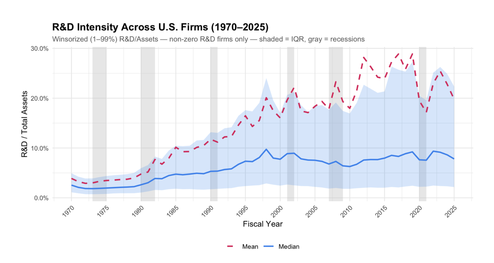
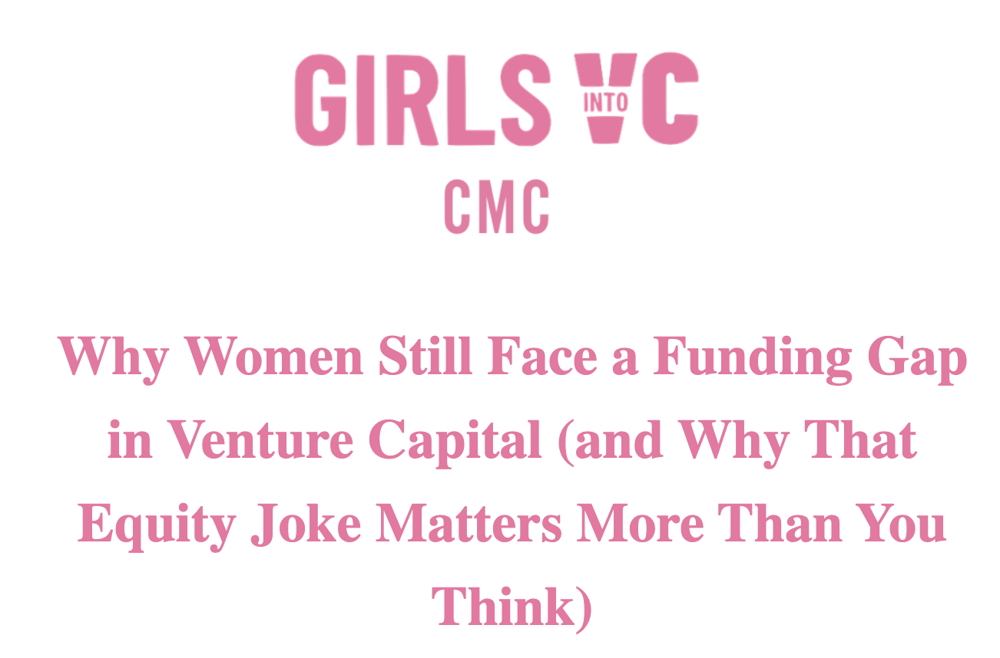
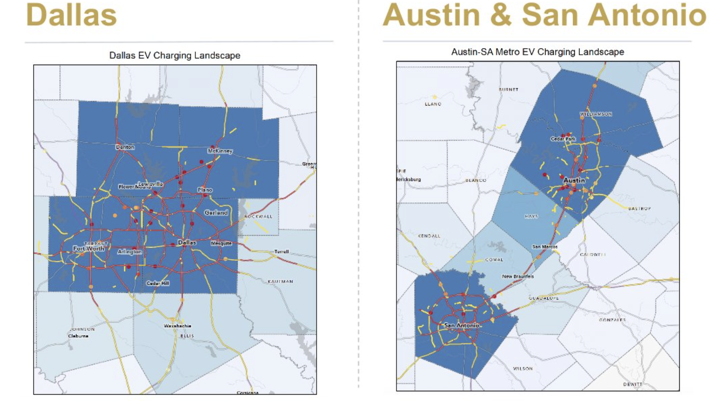

Peináo
A restaurant discovery tool built for people with food allergies, so they're never stuck picking from the same three "safe" spots again. It reads restaurant menus item by item, flags peanut and gluten risk with an AI classifier, and blends that with real Google reviews into one simple score per restaurant. What started as a scrappy prototype for Claremont Village grew into a full sourcing and scoring pipeline covering every restaurant on St. Marks Place in NYC.
- Figma
- Claude Code
- Python
- Google Maps API
- Streamlit

Why are there no flying cars?
We were promised flying cars by 2025; instead we got AI agents. This project traces where, when, and why that narrative shifted, using an empirical analysis of U.S. R&D expenditure from 1953 to today. It examines how investment has moved across sectors, industries, and research types over seven decades, built in R using Compustat firm-level data alongside NCSES national aggregates.
- WRDS (Compustat, I/B/E/S)
- R
- STATA

↗Girls Into Venture Capital
As Director of Product and Technology, I built the GIVC website from scratch and rebuilt it on Lovable to support the chapter's growth, adding interactive design features like scroll-reveal animations and animated stats. Beyond the site itself, I restructured how the organization manages its internal workflows and resources. The goal was to give a volunteer-run organization the same polish and infrastructure as a much bigger team, without the overhead.
- Lovable
- Squarespace
- Claude

↗EV Charging Site Selection Model
Built a model and interactive maps to identify high-potential EV charging locations for tenant land acquisition decisions. The analysis layered traffic patterns, revenue potential, and utility access to score sites, with charging port data scraped from Tesla stations used to estimate real-world revenue.
- ArcGIS
- R
- STATA
- Claude Code Agents
